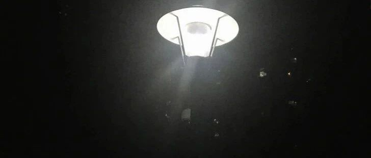

《油畫之緣》
《夢》
晚上做了一個“夢”，夢見我參加（作者）在上海舉辦的個人畫展。身穿旗袍，緩緩走向畫展，中間有一個大圓桌，分有好几“層”，上面擺滿了各種工藝品，還有各種各樣的氣球，供遊客挑選，留念，出口處有留言墻供遊客簽名和留言，（遊客看到這些畫作的有什麼樣的想法和感想……）久久不願醒來，隨著清晨的鳥叫聲，我慢慢“酥”醒來，原來一切都是“夢”中的“世界”，繼續開始“搬磚”的日常……
當看到這些畫作的時候，可以了解作者的所想，所思和所繪，好奇作者是什麼樣子？您可以看這幾副作品，《自畫像》《我拿粉色琉璃燈》《我和兩只鸚鵡》想了解作者的喜怒哀樂可以了解這幾副作品《我的世界開滿了花》《告別過去是自己》《社恐》《我的2021》《飛走的心》《愛神》想了解作者房間是什麼樣子的可以了解《有烏德琴和隨園的房間》《有堅琴和隨園窗子的房間》《在房間讀信的人》想了解作者繪畫時的樣子您可以了解《我的花園》作者熟睡是什麼樣子呢您可以了解？《當我熟睡》《我在睡夢中亂想》作者過生日是什麼樣子呢？您可以了解？《在上海的第一個生日》……